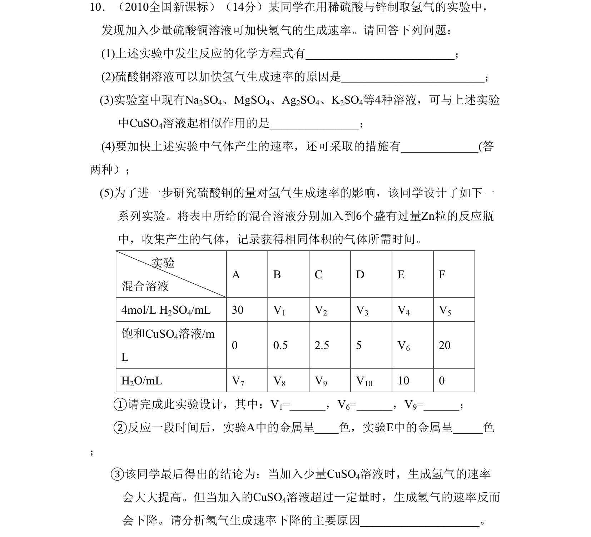
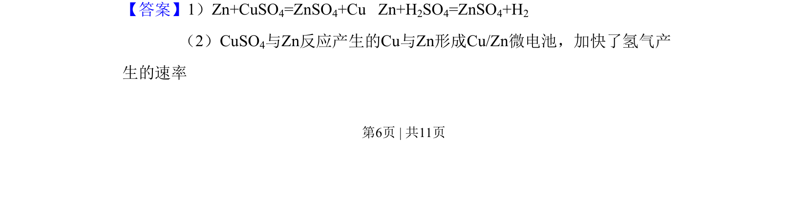
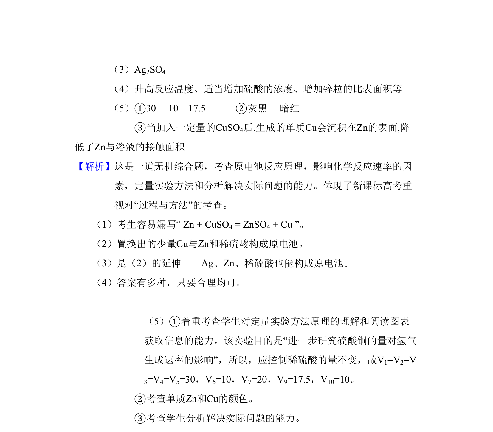

考点：原电池原理 反应速率影响因素 定量实验 实验现象

该题考查原电池原理、反应速率影响因素及定量实验分析。


📄 原 PDF 第 6 页：
素材/真题/吉林/2008-2024·（吉林）化学高考真题/2010年高考化学试卷（新课标）（解析卷）.pdf
10．（2010全国新课标）（14分）某同学在用稀硫酸与锌制取氢气的实验中， 发现加入少量硫酸铜溶液可加快氢气的生成速率。请回答下列问题： (1)上述实验中发生反应的化学方程式有____； (2)硫酸铜溶液可以加快氢气生成速率的原因是___； (3)实验室中现有Na2SO4、MgSO4、Ag2SO4、K2SO4等4种溶液，可与上述实验 中CuSO4溶液起相似作用的是___； (4)要加快上述实验中气体产生的速率，还可采取的措施有___(答 两种）； (5)为了进一步研究硫酸铜的量对氢气生成速率的影响，该同学设计了如下一 系列实验。将表中所给的混合溶液分别加入到6个盛有过量Zn粒的反应瓶 中，收集产生的气体，记录获得相同体积的气体所需时间。 实验 混合溶液 A B C D E F 4mol/L H2SO4/mL 30 V1 V2 V3 V4 V5 饱和CuSO4溶液/m L 0 0.5 2.5 5 V6 20 H2O/mL V7 V8 V9 V10 10 0 ①请完成此实验设计，其中：V1=_，V6=，V9=； ②反应一段时间后，实验A中的金属呈_色，实验E中的金属呈_色 ； ③该同学最后得出的结论为：当加入少量CuSO4溶液时，生成氢气的速率 会大大提高。但当加入的CuSO4溶液超过一定量时，生成氢气的速率反而 会下降。请分析氢气生成速率下降的主要原因______。
【答案】1）Zn+CuSO4=ZnSO4+Cu Zn+H2SO4=ZnSO4+H2
（2）CuSO4与Zn反应产生的Cu与Zn形成Cu/Zn微电池，加快了氢气产
生的速率